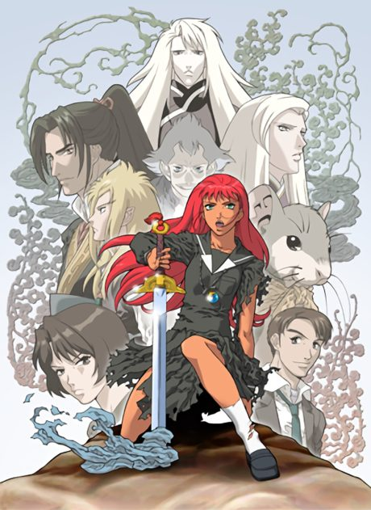
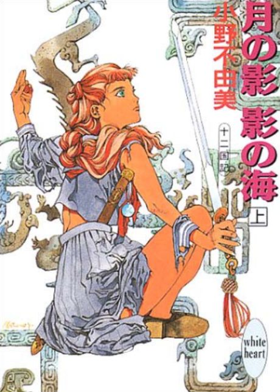

Anime
Light novel2002 · Action, Adventure, Fantasy
The Twelve Kingdoms
十二国記
AniList7.7
Animeter—
Episodes45 ep
SourceVol. 5
Anime finished. Where does the story go next?
Start at Volume5
The anime mostly adapts the first four novels (Sea of Shadow through Skies of Dawn); later novels are unadapted.
14ongoing
The Twelve KingdomsStart reading here